Introduction
Ce rapport accompagne le relevé d'audit effectué sur le site « LuxTrust ».
La méthodologie d'audit employée repose sur le référentiel RGAA 4.1, consultable à l'adresse suivante : https://accessibilite.public.lu/fr/rgaa4.1/criteres.html
L'audit a été réalisé au moyen de l'utilisation de navigateurs web et d'outils spécialisés. Des tests de restitution ont également été effectués conformément à la base de référence définie par le RGAA 4.1.
Échantillon
L'audit a porté sur un échantillon de 10 pages pour le niveau double A (AA) :
| Nº page | Titre de la page | URL |
|---|---|---|
| P01 | Accueil | https://www.luxtrust.com/fr |
| P02 | Plan du site | https://www.luxtrust.com/fr/plan-du-site |
| P03 | Contact | https://www.luxtrust.com/fr/nous-contacter |
| P04 | CGV | https://www.luxtrust.com/fr/conditions-generales-de-vente |
| P05 | Authentification | https://www.luxtrust.com/fr/myluxtrust/test |
| P06 | Aide | https://www.luxtrust.com/fr/aide-et-support |
| P07 | Commander | https://www.luxtrust.com/fr/particuliers/commander-mon-produit |
| P08 | Actualités | https://www.luxtrust.com/fr/propos-de-luxtrust/actualites |
| P09 | Repository | https://www.luxtrust.com/fr/repository |
| P10 | Changer l'image secrète | https://www.luxtrust.com/fr/myluxtrust/changeimage |
Environnement de test (base de référence)
Quelques critères RGAA, notamment ceux de la thématique JavaScript, incluent des tests de restitution à effectuer sur des technologies d'assistance associées à des navigateurs et des systèmes d'exploitation. Pour qu'un dispositif HTML / WAI-ARIA ou son alternative soit considéré comme compatible avec l'accessibilité, il faut qu'il soit pleinement fonctionnel, en termes de restitution et de fonctionnalités sur certaines combinaisons. Vous trouverez une explication détaillée de cet environnement de tests dans le document du RGAA 4.1.
Nous détaillons ci-dessous la base de référence utilisée pour réaliser les tests de restitution des composants du site.
Environnement de test – ordinateur
| Technologie d'assistance | Navigateur |
|---|---|
| NVDA 2021.2 | Firefox 93 |
| JAWS 2020 | Firefox 93 |
| VoiceOver | Safari 14 |
Environnement de test — mobile
| Système d'exploitation | Technologie d'assistance | Navigateur |
|---|---|---|
| Android 11 | TalkBack (dernière version) | Chrome 86 |
Accessibilité des pages auditées
Le site présente un niveau général d'accessibilité faible.
Le niveau moyen de conformité relevé atteint 43,84% de conformité sur l'ensemble des pages auditées, avec 35,19% de conformité au niveau simple A (A) et 68,42% de conformité au niveau double A (AA).
Le site est non conforme.
Conformité RGAA 4.1 du site
| Conforme | Non conforme | |
|---|---|---|
| A | 35,19% | 64,81% |
| AA (légal) | 43,84% | 56,16% |
Note sur le calcul de conformité
La conformité globale (Tableau « Conformité RGAA 4.1 ») est calculée de la manière suivante : C / (C+NC). C est le nombre de critères conformes et NC le nombre de critères non conformes.
C'est ce nombre qui constitue la référence légale. Il représente le taux de conformité de l'échantillon.
Il est normal que le taux de conformité global diffère sensiblement du taux de conformité par page. En effet, un critère NC (non conforme) sur une page rend le critère non conforme sur l'ensemble de l'échantillon.
Pour qu'un site soit conforme (100 % des critères applicables sont conformes au niveau AA), il est nécessaire que le taux de conformité par page équivaille à 100 %.
Conformité pour chaque niveau
| Conforme | Non conforme | |
|---|---|---|
| A | 35,19% | 64,81% |
| AA | 68,42% | 31,58% |
Moyenne par pages
| Nº page | Titre de la page | %C |
|---|---|---|
| P01 | Accueil | 70,00% |
| P02 | Plan du site | 97,14% |
| P03 | Contact | 74,00% |
| P04 | CGV | 97,06% |
| P05 | Authentification | 71,05% |
| P06 | Aide | 86,05% |
| P07 | Commander | 56,60% |
| P08 | Actualités | 83,72% |
| P09 | Repository | 79,07% |
| P10 | Changer l'image secrète | 84,85% |
Moyenne par thématiques
| Thématiques | C | NC |
|---|---|---|
| Images | 0% | 100% |
| Cadres | 0% | 100% |
| Couleurs | 0% | 100% |
| Multimédia | N/A | N/A |
| Tableaux | 33,33% | 66,67% |
| Liens | 0% | 100% |
| Script | 33,33% | 66,67% |
| Eléments obligatoires | 62,50% | 37,50% |
| Structuration | 0% | 100% |
| Présentation | 38,46% | 61,54% |
| Formulaires | 50% | 50% |
| Navigation | 81,82% | 18,18% |
| Consultation | 50% | 50% |
Impacts utilisateurs
Les principales personnes impactées sont les personnes aveugles, déficientes visuelles et celles qui naviguent au clavier. De nombreux textes insuffisamment contrastés et les problèmes liés aux scripts et aux formulaires rendent parfois difficile l'utilisation du site par ces utilisateurs.
Note sur le relevé des non-conformités
Ne sont cités dans ce rapport que quelques exemples issus du relevé des non-conformités.
De plus, toutes les occurrences d'une non-conformité ne sont pas listées dans le relevé. Par exemple : les contrastes de couleur insuffisants, le relevé mentionne quelques occurrences, mais ne les cite pas tous.
Avis
Hormis les contrastes de couleurs insuffisants, la structure du site est plutôt robuste. Les contenus chargés via des cadres d'intégration en revanche, ne sont pas du même niveau d'accessibilité et sont pourtant primordiaux pour la consultation du site (commande, authentification, etc.).
Les non-conformités les plus bloquantes pour les utilisateurs concernent :
- Les textes et composants d'interface insuffisamment contrastés ;
- Les scripts inaccessibles au clavier et sans alternative ;
- L'absence de structure de titrage ;
- Les formulaires incorrectement structurés (étiquettes, regroupements et contrôles de saisie).
Ce sont donc ces points qui devront nécessiter une attention toute particulière et qui demanderont le plus d'efforts.
Annexe technique
Images
Recommandation
Donner à chaque image porteuse d'information une alternative textuelle pertinente et une description détaillée si nécessaire. Lier les légendes à leurs images. Remplacer les images textes par du texte stylé lorsque c'est possible.
Images de décoration
Le site contient des images de décoration qui ne sont pas correctement identifiées, soit parce qu'elles ont une alternative renseignée, soit parce qu'il manque les attributs nécessaires pour qu'elles soient ignorées par les technologies d'assistance.
Ces images n'apportent aucune information et peuvent causer des problèmes de compréhension pour les aveugles et les grands malvoyants qui vont écouter les contenus avec un lecteur d'écran.
- Dans le cas d'une image insérée avec la balise
img, mettre unalt="". - Dans le cas d'une image insérée avec la balise
svg, mettre une propriété ARIAaria-hidden="true".
Constats sur le site
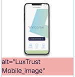Sur la page "Commander", l'image de l'application LuxTrust n'est pas correctement ignorée pour les technologies d'assistance.
Images porteuses d'information
Il est nécessaire de donner une alternative pertinente dans le cas où la suppression de l'image entraînerait un problème de compréhension des contenus.
Constats sur le site

Sur la page "Changer l'image secrète", les images secrètes de la liste n'ont pas d'alternative textuelle. Il est nécessaire de proposer une alternative pour chaque image.
CAPTCHA
Les utilisateurs aveugles doivent pouvoir identifier la nature et la fonction de l'image. L'alternative de l'image dans ce cas pourra être alt="code de sécurité antispam" ou alt="Recopier le code de l'image".
Dans le cadre du RGAA, il suffit de proposer une alternative au CAPTCHA image, par exemple un CAPTCHA sonore, pour que ce contenu soit jugé conforme. Une alternative satisfaisante aux CAPTCHAS pour l'accessibilité serait une validation avec un code envoyé par e-mail ou SMS.
Plus d'informations sur les enjeux d'accessibilité pour les différents types de CAPTCHAS : https://www.w3.org/TR/turingtest/
Constats sur le site
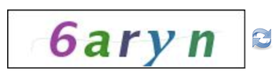Sur la page de commande, l'image du CAPTCHA n'a pas d'alternative et il n'y a pas d'alternative non graphique à la validation.
Cadres
L'absence d'identification des cadres peut poser un problème de repérage dans la structure de la page ou de compréhension des contenus pour les personnes aveugles.
Constats sur le site
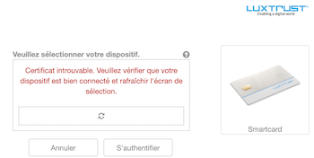De nombreux contenus sont intégrés à l'aide de balises <iframe> qui n'ont pas de titre correctement associé à l'aide de la balise title.
Couleurs
Recommandation
Ne pas donner l'information uniquement par la couleur et utiliser des contrastes de couleurs suffisamment élevés pour les textes et les composants d'interface.
Contrastes des textes
Plusieurs couleurs présentent un rapport de contraste insuffisant, ce qui peut poser problème aux grands malvoyants et aux déficients visuels qui ont des difficultés à percevoir les couleurs ou les contrastes.
Rapports de contrastes définis par le RGAA
- Pour les textes qui ont une taille de police calculée inférieure à 24px sans effet de graisse ou une taille de police calculée inférieure à 18,5px avec effet de graisse, le rapport de contraste entre la couleur du texte (y compris le texte en image) et son arrière-plan doit être de 4.5:1, au moins.
- Pour les textes qui ont une taille de police calculée supérieure ou égale à 24px sans effet de graisse ou une taille de police calculée supérieure ou égale à 18,5px avec effet de graisse, le rapport de contraste entre la couleur du texte (y compris le texte en image) et son arrière-plan doit être de 3:1, au moins.
Vous pouvez foncer les couleurs pour obtenir le rapport de contraste exigé.
Si la charte graphique ne peut être modifiée, fournissez une méthode aux utilisateurs pour consulter le site avec des contrastes suffisants. Ceci peut être réalisé simplement avec une fonctionnalité JavaScript et une surcharge CSS des couleurs.
Vous pouvez voir un exemple de ce type de mécanisme sur le site sncf.com. Dans les réglages d'accessibilité, vous trouverez une option qui permet d'afficher le site avec des contrastes renforcés et inversés.
Constats sur le site
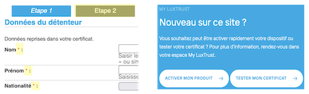De nombreux passages de texte ne sont pas suffisamment contrastés, la plupart du temps avec l'utilisation de la couleur bleue #00AAE7 sur des fonds blancs #FFFFFF ou #F0FAFD avec des ratios de 2.66 ou 2.5. D'autres contrastes de texte ne sont pas suffisants dans les cadres d'intégration de contenu, par exemple #FF0000 / #FFFFFF ratio de 4 ou #999999 / #FFFFFF ratio de 2.85.
Contraste des composants d'interface
Les composants d'interface, les illustrations porteuses d'information ou encore les mises en couleurs porteuses d'information doivent être suffisamment contrastés pour être perçus par les utilisateurs ayant des troubles de perception des couleurs. Par exemple, une icône porteuse d'information devra avoir un rapport de contraste avec la couleur de fond de 3. De même, pour un champ de saisie de formulaire, dont la zone active est matérialisée par sa bordure, alors la couleur de cette bordure devra avoir un rapport de contraste de 3 avec la couleur de fond de la page.
Constats sur le site
Plusieurs composants d'interface ne sont pas suffisamment contrastés, par exemple le bouton de lancement de la recherche (#00AAE7 / #FFFFFF ratio de 2.66) ou le lien vers l'accueil dans le fil d'Ariane (#C1EAAF / #FFFFFF ratio de 1.34).
Information par la couleur
Lorsqu'une information est donnée par la couleur, il faut qu'elle soit également véhiculée par une autre méthode, par exemple par un texte qui donne la même information, pour être perçue par les utilisateurs aveugles.
Il faut également donner un indice visuel autre que la couleur, afin de répondre aux besoins des personnes déficientes visuelles (les daltoniens par exemple). Il peut s'agir d'un symbole, d'une texture, de chiffres.
Constats sur le site
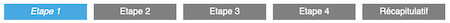Sur le formulaire en étape de la page de commande, l'étape en cours n'est indiquée que par la couleur de fond.
Tableaux
Recommandation :
Donner un résumé à chaque tableau de données complexe, s'assurer que pour chaque tableau de données ayant un titre, ce titre est pertinent, identifier clairement les cellules d'en-tête, utiliser un mécanisme pertinent pour lier les cellules de données aux cellules d'en-tête. Pour chaque tableau de mise en forme, veiller à sa bonne linéarisation.
Tableaux de mise en forme
La restitution des tableaux peut poser problème pour les personnes aveugles, car les technologies d'assistance tentent d'optimiser la navigation dans les tableaux, en modifiant par exemple le comportement des flèches de direction pour circuler plus facilement entre les cellules.
Dans un tableau de données, cela est utile et correspond au format de données tabulaires, mais dans un tableau de mise en forme, ce comportement est problématique et peut venir perturber le parcours des informations.
L'API ARIA propose une propriété (role="presentation") qui permet d'annuler la sémantique des éléments restitués.
Constats sur le site
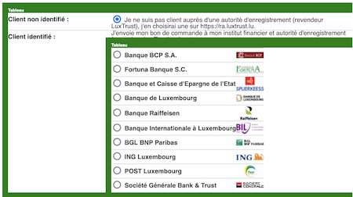Sur le formulaire par étape de la page "Commander", la structure des contenus est basée sur des tableaux de présentation qui n'implémentent pas la propriété role="presentation" pouvant engendrer des erreurs lors de la restitution par les technologies d'assistance.
Tableaux de données
Un tableau de données doit répondre à certains enjeux pour être exploité correctement par les lecteurs d'écran. Les enjeux sont les suivants :
- Le tableau doit posséder un titre permettant de l'identifier (
<caption>) ; - Les en-têtes doivent être identifiés (balises
<th>) et doivent pouvoir être restitués lorsque l'utilisateur parcourt chaque cellule à l'aide de son lecteur d'écran (attributsscopesi nécessaire).
Constats sur le site
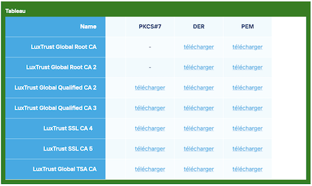Sur la page "Repository", sur le tableau proposant les téléchargements des certificats racine, on note l'absence de définition des cellules d'en-tête <th>, de la liaison des cellules de contenu avec les cellules d'en-tête (attribut scope ou liaison headers - id) et la liaison du titre ("Téléchargez les certificats racine:") avec le tableau. L'absence de ces éléments peut poser des problèmes de restitution et donc de compréhension aux utilisateurs.
Liens
Recommandation :
Donner des intitulés de lien explicites, grâce à des informations de contexte notamment, utiliser le titre de lien le moins possible. S'assurer que le nom visible est contenu dans le nom accessible.
Liens-images
Un lien-image est un lien dont le contenu n'est composé que d'une ou plusieurs images (balises <img>). Généralement, ces liens ne posent aucun problème aux utilisateurs voyants qui parviennent à comprendre la destination du lien grâce à l'image et son contexte. En revanche, pour une personne aveugle, ces liens doivent obligatoirement posséder un intitulé.
L'intitulé d'un lien-image est généré grâce à l'alternative de l'image contenue dans ce lien.
Constats sur le site
Sur la page d'accueil, le lien-image (<svg>) vers l'accueil dans l'en-tête n'a pas d'alternative textuelle.
Présence d'intitulés
Un lien doit toujours posséder un intitulé permettant à l'utilisateur de comprendre sa destination. Les liens contenant uniquement des objets graphiques (images, icônes, etc.) posent souvent problème pour les personnes aveugles.
Pour ces liens, la technique pour fournir un intitulé dépend des cas :
- Si ces liens-images sont construits avec des balises images (
<img />), renseignez l'alternative de l'image (par exemple :<a href="https://twitter.com/example"><img src="path/to/img/png"alt="Suivez-nous sur Twitter" /></a>) - Si ces liens-images sont construits avec des balises SVG (
<svg>), alors ajoutez sur cette balise unrole="img"pour indiquer aux lecteurs d'écran qu'il s'agit bien d'une image et un intitulé pararia-label="Suivez-nous sur Twitter".
Constats sur le site
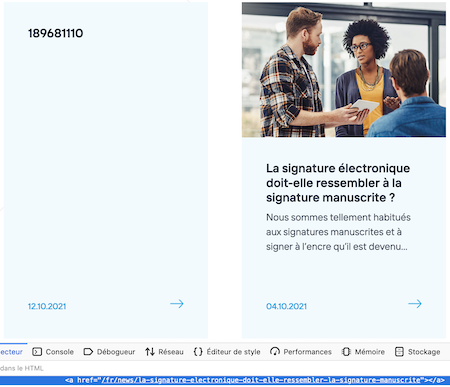Sur la page d'accueil, les blocs de la zone "Actualités" sont vides et le repositionnement autour du bloc est fait uniquement en CSS, rendant la restitution impossible aux utilisateurs.
Scripts
Recommandation :
Donner si nécessaire à chaque script une alternative pertinente. Rendre possible le contrôle de chaque code script au moins par le clavier et la souris et s'assurer de leur compatibilité avec les technologies d'assistance. Identifier les messages de statut lorsque c'est nécessaire.
Utilisation des boutons et des liens
Pour les aveugles et les grands malvoyants qui utilisent un lecteur d'écran, ce manque de distinction claire entre les liens et les boutons peut poser de graves problèmes.
Ainsi, un bouton implémenté sous la forme d'un lien qui déclenche une action de la page, risque de perturber l'utilisateur qui s'attendra au chargement d'une nouvelle page.
De manière générale, les liens devraient être réservés à l'affichage d'une nouvelle page ou l'accès rapide au contenu de la page. Dans tous les autres cas, l'emploi d'un bouton d'action est plus pertinent.
Enfin, chaque bouton doit avoir un nom accessible défini, soit par l'intermédiaire d'un texte (visible ou positionné hors écran) ou d'une propriété title, aria-label ou aria-labelledby.
Constats sur le site
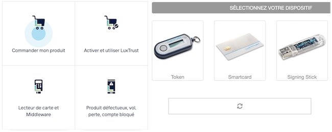De nombreux éléments déclenchant des actions JavaScript sont implémentés sur des éléments autres que <button> et n'ont pas tous des intitulés accessibles, par exemple :
- Sur la page d'accueil, le bouton de fermeture de l'information sur les messages frauduleux n'a pas d'intitulé ;
- Sur les écrans d'authentification, plusieurs actions (rafraîchir, choisir un dispositif, ouvrir l'aide, etc.) ne sont pas implémentées avec des balises
<button>; - Sur la page "Aide et support" les composants permettant de filtrer les éléments ("Commander mon produit", "Activer et utiliser LuxTrust", "Gérer mon compte", etc.) doivent être implémentés avec des balises
<button>.
Autocomplétion
Les champs de saisie qui proposent des listes de résultats au fil de la saisie ne sont pas toujours accessibles aux utilisateurs qui ne perçoivent pas l’écran ou ne le perçoivent pas dans sa totalité. En effet, ils n’ont pas l’information que des résultats sont apparus par exemple, ou encore que la recherche ne retourne aucun résultat.
Constats sur le site
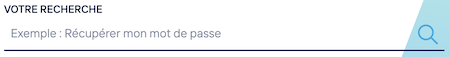Sur la page "Aide et support", le champ de recherche propose une fonctionnalité d'autocomplétion qui n'implémente pas le motif ARIA Combobox.
Éléments interactifs inaccessibles au clavier
Si un élément ne peut pas recevoir le focus ou n'est pas totalement utilisable au clavier, les utilisateurs pour lesquels le clavier est le seul moyen de naviguer seront bloqués.
Constats sur le site
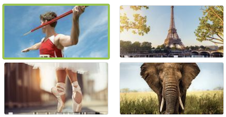Sur la page de changement d'image secrète, les images proposées ne sont pas accessibles au clavier. Un système permettant d'accéder aux images lors d'une navigation au clavier et indiquant quelle image est sélectionnée devrait être mis en place.
Fenêtres modales
Constats sur le site
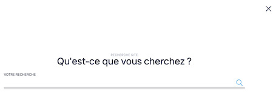Par exemple, la fenêtre modale de recherche ne respecte pas le motif ARIA Dialog (l'élément déclenchant l'ouverture doit être un <button>, la touche ESC doit permettre de fermer la fenêtre, les éléments en arrière-plan ne doivent pas être accessibles au clavier, etc.).
Gestion de la visibilité de zones
Le site possède des fonctionnalités d'affichage ou de masquage des zones de contenus. L'état affiché/masqué du contenu additionnel doit pouvoir être disponible pour les technologies d'assistance afin que les utilisateurs aveugles accèdent à cet état.
Pour ce type d’élément, l’implémentation du motif ARIA Disclosure est recommandée.
Constats sur le site
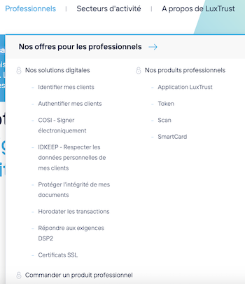De nombreux éléments implémentent une fonctionnalité permettant d'afficher/masquer le contenu, mais ne respectent pas le motif ARIA Disclosure, par exemple, le menu principal (les éléments affichés au survol doivent l'être également à la prise de focus, ceux non visibles ne doivent pas être atteignables au clavier, etc.).
Carrousel simple (carousel)
Un carrousel simple est un carrousel qui ne possède que des boutons "suivant", "précédent" et est dépourvu de puces permettant d'activer un contenu particulier du carrousel.
Constats sur le site
En mode réduit, la zone "Actualités" de la page d'accueil se transforme en carrousel dont seul le 1er élément peut être atteint par les technologies d'assistance.
Pour ce type de composants, l'implémentation du motif ARIA Carousel est recommandée.
Gestion du focus
Lorsqu'une fonctionnalité ajoute, modifie, supprime ou met à jour un contenu dans la page, il est nécessaire de repositionner le focus (qui représente la position active de l'utilisateur) à l'endroit le plus approprié.
Ces repositionnements de focus sont indispensables pour que l'utilisateur qui ne voit pas l'écran (aveugle par exemple) ou qui utilise des moyens de navigation complexes puisse utiliser chaque fonctionnalité de manière logique et cohérente.
Constats sur le site
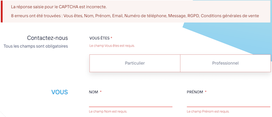Plusieurs fonctionnalités nécessitent un repositionnement de focus :
- Sur le formulaire de contact, en cas d'erreur de validation, un message d'erreur est affiché sans que la page soit rechargée. Le focus doit être repositionné sur le message d'erreur ou sur le 1er élément de formulaire en erreur.
- Sur la page "Aide et support", après l'activation d'un filtre dans la zone des catégories, l'utilisateur doit être repositionné sur le 1er élément de la zone filtrée.
- Sur la page de commande, à la modification de la valeur des boutons radio permettant de choisir la façon d'être identifié, le focus est perdu alors qu'il doit rester sur l'élément sélectionné.
- Sur la page "Actualités", étant donné que le système de pagination ne recharge pas la page, à l'activation d'un lien de pagination, le focus doit être repositionné sur le 1er élément nouvellement chargé.
Éléments obligatoires
Recommandation
Vérifier que chaque page web a un code valide selon le type de document, un titre pertinent et une indication de langue par défaut. Vérifier que les balises ne sont pas utilisées uniquement à des fins de présentation, que les changements de langues et de direction de sens de lecture sont indiqués.
Titre de la page
Le titre de la page (visible dans l'onglet du navigateur) est un élément de repère dans le site web. Pour les utilisateurs de lecteurs d'écran (utilisateurs aveugles ou grands malvoyants), c'est le premier élément restitué par le lecteur d'écran au chargement de la page. Cela permet de donner du contexte aux utilisateurs qui n'ont pas une vision globale de la page. Pour les utilisateurs avec des troubles de la mémoire, c'est l'information à laquelle ils accèdent lorsqu'ils naviguent avec l'historique de navigation du navigateur. Il est donc essentiel d'avoir des titres de pages pertinents, concis et très souvent uniques dans le site, et qui reflètent de la position de l'utilisateur dans le site web.
Il est des cas particuliers, comme les pages dont le contenu est une liste de résultats paginés (ex. : les résultats de recherche), pour lesquels le titre doit refléter la nature de la recherche ainsi que le numéro de page en cours de consultation.
Constats sur le site
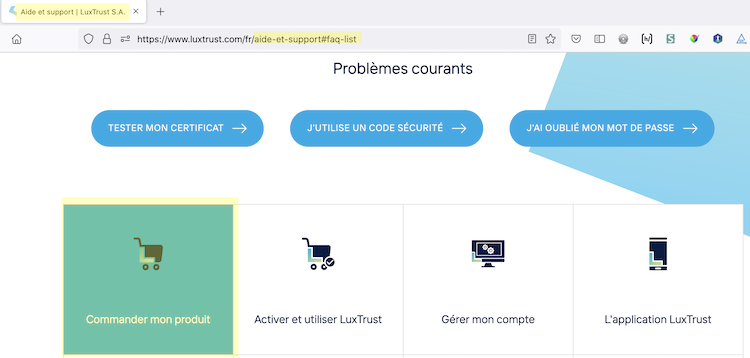Sur certaines pages (par exemple "Aide et support" ou "Actualités"), le titre de la page ne reprend pas les éléments de pagination et/ou de filtres. Les titres doivent reprendre les informations importantes du contenu affiché de la page (pagination, filtres activés, etc.).
Indication de langue
Les lecteurs d'écran utilisent les indications de langue pour vocaliser le contenu dans la langue définie. La page doit contenir une définition de langue principale (généralement sur l'élément html).
Ensuite, les éléments de langue étrangère présents dans le contenu doivent être signalés. Si on trouve dans la page des termes absents du dictionnaire de la langue principale de la page, il faut les identifier afin que le lecteur d'écran les restitue dans la langue appropriée. En effet, une mauvaise prononciation pourrait mener à des incompréhensions pour les utilisateurs qui reposent uniquement sur des restitutions orales. Les noms propres sont exclus de cette obligation.
Constats sur le site
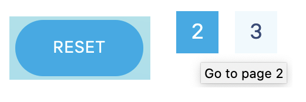Par exemple, sur la page "Actualités", le bouton "Reset" et les descriptions des liens de la pagination (attribut title) sont en langue anglaise sans indication de langue, déclenchant des erreurs de prononciation à la restitution. Plusieurs mots en langue anglaise sont présents sur différentes pages.
Balises utilisées à des fins de présentation
Les éléments de structure HTML ont chacun une sémantique particulière (paragraphe, titre, image, lien, etc.). Si les éléments sont mal employés (détournés de leur utilité première), cela peut poser des problèmes aux utilisateurs qui naviguent à l'aide d'une technologie d'assistance (lecteur d'écran, plug-in…). En effet, les technologies d'assistance disposent de raccourcis permettant de naviguer rapidement entre certains types d'éléments (paragraphes, titres, listes, etc.). Si ces éléments sont mal employés, les utilisateurs ne peuvent pas utiliser ces fonctionnalités de repère et de navigation dans le contenu.
Constats sur le site
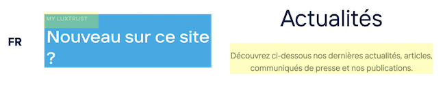On note de nombreux passages de texte structurés uniquement par des balises <div>, par exemple sur la page d'accueil, la langue active, les paragraphes dans la zone "Actualités" et "Nouveau sur ce site ?". De nombreuses pages contiennent des éléments dont les contenus ne correspondent pas aux balises dans lesquels ils sont implémentés.
Structuration de l'information
Recommandation
Utiliser des titres, des listes, des abréviations et des citations pour structurer l'information. S'assurer que la structure du document est cohérente.
Titres
Le titrage des contenus est une étape importante dans la structuration de ces contenus. Cela répond à deux besoins :
- identifier rapidement un contenu recherché ;
- naviguer rapidement dans le contenu en se déplaçant de titre en titre.
Un titrage correct fournit à l'utilisateur d'un lecteur d'écran un plan du document et lui permet de naviguer de titre en titre pour se déplacer plus rapidement dans le contenu de la page.
Pour valider la structure de votre page, vous pouvez utiliser l'extension Firefox HeadingsMap. Lorsque l'extension est active, sélectionnez l'onglet « Headings » et vérifiez la cohérence et l'imbrication des titres.
Constats sur le site
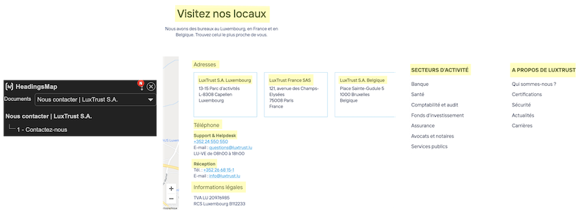On note l'absence de hiérarchie de titres sur la plupart des pages. En effet, de nombreux éléments structurants des zones de la page ne sont pas implémentés comme des titres dans le code source. Par exemple, sur la page "Contactez-nous", les passages de texte "Visitez nos locaux", "Adresses", "LuxTrust S.A. Luxembourg", "LuxTrust France SAS", "LuxTrust S.A. Belgique", "Téléphone", "Support & Helpdesk", "Réception", "Informations légales" et tous les titres des listes du pied de page sont des éléments structurants et doivent être des titres dans le code source, en veillant à appliquer une hiérarchie de niveau cohérente.
De même, les cadres d'intégration de contenus externes (commande, authentification, etc.) doivent également posséder une structure de titrage correcte, afin de faciliter la navigation aux utilisateurs.
Listes
La structuration en listes permet aux utilisateurs de lecteurs d'écran de consulter plus rapidement le contenu, grâce à des raccourcis spécifiques, et d'accéder directement à une liste ou de la passer sans avoir à en parcourir tous les items.
Constats sur le site
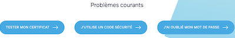Certaines listes, notamment de liens, ne sont pas correctement implémentées. Par exemple sur la page "Aide et Support", la liste permettant de filtrer les contenus ("Tester mon certificat", "J'utilise un code de sécurité" et "J'ai oublié mon mot de passe") doit être structurée avec des éléments <ul><li>.
Structure du document
L'utilisation correcte des balises HTML5 et des landmarks ARIA va permettre d'enrichir la restitution pour les utilisateurs aveugles qui ne perçoivent pas les mises en forme : la navigation principale ne sera plus perçue simplement comme une liste de liens, elle sera restituée à l'utilisateur comme un élément de navigation, par l'intermédiaire du lecteur d'écran qui annoncera « région » ou « repère ».
De plus, ces marqueurs sémantiques vont également constituer des éléments de navigation rapide dans la page. Grâce à un raccourci clavier, certains utilisateurs vont pouvoir naviguer plus rapidement entre les régions qui auront été ainsi identifiées.
Constats sur le site
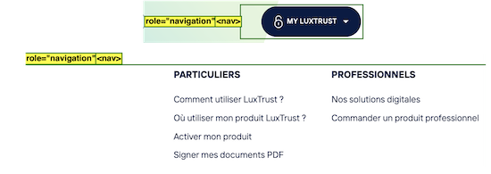On note la présence de balises <nav> sur des zones de pages qui ne sont pas considérées comme des navigations : menu "My LuxTrust" dans l'en-tête et les liens du pied de page. Ne conserver les balises <nav> que sur les zones contenant réellement des éléments de navigation (menu principal et menu de changement de langue).
Présentation de l'information
Recommandation
Utiliser des feuilles de styles pour contrôler la présentation de l'information. Vérifier l'effet de l'agrandissement des tailles des caractères sur la lisibilité. S'assurer que les liens sont correctement identifiables, que la prise de focus est signalée, que l'interlignage est suffisant et donner la possibilité à l'utilisateur de contrôler la justification des textes. S'assurer que les textes cachés sont correctement restitués et que l'information n'est pas donnée uniquement par la forme ou la position d'un élément. S'assurer que les contenus sont lisibles et utilisables dans une fenêtre de largeur réduite. Veiller à ce que l'application de paramètres typographiques n'entraîne pas la perte de contenu ou de fonctionnalité. S'assurer que les contenus qui apparaissent au survol et à la prise de focus puissent être contrôlés par l'utilisateur.
Utilisation de CSS exclusivement
Certains utilisateurs qui présentent des troubles de la lecture (personnes dyslexiques par exemple), vont avoir besoin d'adapter la présentation des pages avec leurs propres mises en forme. Cela est possible sans difficulté si le site web utilise exclusivement les feuilles de styles CSS pour réaliser les mises en forme. Cependant, l'utilisation d'attributs et balises HTML de mise en forme rend ces adaptations plus compliquées, sinon impossibles.
Le RGAA donne la liste des attributs et balises qu'il est interdit d'utiliser.
Constats sur le site
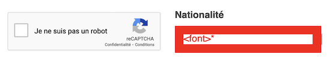Plusieurs éléments ont des mises en forme qui utilisent des balises HTML ou des attributs de mise en forme interdits. Par exemple, dans le formulaire de commande, avec la présence de balises <font> ou des attributs frameborder, width et height sur les cadres d'intégration (de reCAPTCHA par exemple).
Contenu visible sans les feuilles de styles
Des contenus informatifs insérés avec CSS (avec des images de fond contenant du texte en image) peuvent ne pas être restitués par les lecteurs d'écran ou les systèmes de loupes vocalisés.
Constats sur le site
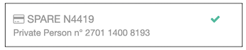Sur les écrans permettant l'authentification, l'information que la connexion via le dispositif est correcte (sous la forme d'une icône "check" verte), est insérée uniquement en CSS sans alternative textuelle, empêchant la restitution de cette information aux technologies d'assistance.
Liens dont la nature n'est pas évidente
Un lien dont la nature n'est pas évidente est un lien qui peut être confondu avec un texte normal lorsqu'il est signalé uniquement par la couleur par certains utilisateurs ne percevant pas ou mal les couleurs.
Les personnes déficientes visuelles peuvent ignorer ces liens puisque ceux-ci ne sont pas visuellement discernables du reste du texte dans lequel ils sont insérés.
Constats sur le site
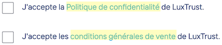Sur la page "Contactez-nous", les liens vers les pages "Politique de confidentialité" et "conditions générales de vente" dans les descriptions des cases à cocher d'acceptation des RGPD et CGV ne sont pas suffisamment visibles par rapport au texte environnant. Utiliser un soulignement, comme sur les autres pages, pour permettre aux utilisateurs de discerner les liens du texte environnant.
Visibilité de la prise de focus
Les personnes avec un handicap moteur qui naviguent au clavier peuvent rencontrer des difficultés considérables à utiliser du contenu si elles ne sont pas en mesure de repérer l'indication visuelle du focus et ses déplacements.
Constats sur le site
La prise de focus n'est pas visible pour les liens vers l'accueil dans l'en-tête et vers "Made by Vanksen" dans le pied de page. L'indication visuelle est nécessaire sur tous les éléments pouvant recevoir le focus.
Information donnée par la forme, la taille ou la position
Les utilisateurs qui ne perçoivent pas la mise en forme (utilisateurs aveugles par exemple) n'auront pas accès aux informations véhiculées par la mise en forme la taille (taille du texte pour signifier un degré d'importance par exemple), ou la position (une consigne indiquant de cliquer en haut à droite par exemple). Il est nécessaire de fournir un équivalent textuel qui permette d'offrir la même information aux utilisateurs aveugles.
Constats sur le site
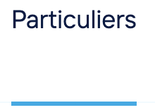L'indication de la page en cours de consultation du menu principal n'est donnée que par un soulignement.
Contenus masqués
Il est nécessaire que les utilisateurs qui naviguent à l'aide de technologies d'assistance, notamment les personnes aveugles, aient accès à tous les contenus visibles présents sur la page. Pour cela, les contenus porteurs d'informations ne doivent pas être exclus de l'arbre d'accessibilité, notamment avec l'usage de la propriété aria-hidden="true".
Constats sur le site
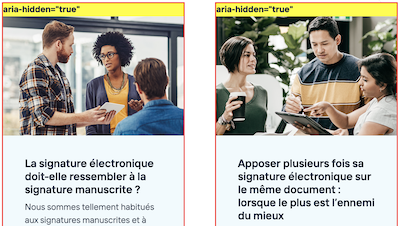Sur la page d'accueil, lorsque l'on modifie le zoom de la page, les blocs de la zone "Actualités" prennent la propriété aria-hidden="true" empêchant la restitution aux technologies d'assistance.
Paramètres typographiques
Les utilisateurs malvoyants et/ou dyslexiques ont souvent recours à des adaptations de la présentation des textes. Pour cela, on doit s'assurer que de tels paramètres ne viennent pas perturber leur lecture sur le site.
Les présentations doivent supporter l'application de paramètres typographiques visant à augmenter les interlignages, interlettrages, les espaces entre les mots et entre les paragraphes. L'application de ces paramètres ne doit pas entraîner la perte de contenus ou de fonctionnalité :
- L'interlignage augmenté de 1,5 fois la taille de la police ;
- L'espacement entre les paragraphes augmenté de 2 fois la taille de la police ;
- L'espacement des lettres augmenté de 0,12 fois la taille de la police ;
- L'espacement des mots augmenté jusqu'à 0,16 fois la taille de la police.
Constats sur le site
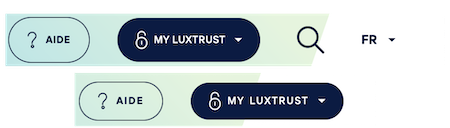Sur la page d'accueil, lorsque les paramètres typographiques sont adaptés, les éléments permettant d'ouvrir le moteur de recherche et de changer la langue principale du site ne sont plus visibles sur la page.
Contenus additionnels au survol et au focus
Les contenus additionnels qui apparaissent au survol ou à la prise de focus (par exemple, un menu déroulant, une infobulle d'information), peuvent être contrôlés par l'utilisateur. Par exemple, les utilisateurs malvoyants qui se servent d'une loupe d'écran peuvent déclencher l'affichage accidentel des contenus qui apparaissent au survol et ces affichages non désirés perturbent la consultation pour ces utilisateurs. L'utilisateur doit alors disposer d'un moyen simple pour les masquer et continuer sa consultation.
Également, en utilisant une loupe d'écran, il est probable que le contenu additionnel soit en fait apparu en dehors de la zone de zoom de la loupe, l'utilisateur doit pouvoir survoler le contenu additionnel à la souris.
Constats sur le site
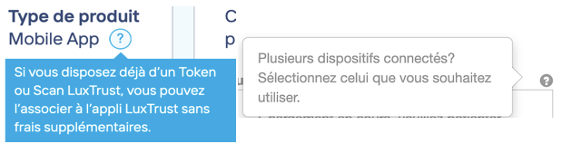Sur les écrans d'authentification ou sur la page de commande, des informations sont affichées au survol d'éléments (sous la forme du caractère "?") qui ne sont pas accessibles au clavier.
Formulaires
Recommandation :
Associer pour chaque formulaire chacun de ses champs à son étiquette, grouper les champs dans des blocs d'informations de même nature, regrouper les items de même nature dans les listes de choix, donner à chaque bouton un intitulé explicite. Vérifier la présence d'aide à la saisie, s'assurer que le contrôle de saisie est accessible et que l'utilisateur peut contrôler les données à caractère financier, juridique ou personnel.
Étiquettes et champs
Les champs de formulaires doivent tous posséder des étiquettes correctement reliées.
Une étiquette de champ est un texte situé à proximité du champ de formulaire qui permet de connaître la nature, le type ou le format des informations attendues.
De cette manière, lorsqu'un utilisateur entre dans le champ de saisie avec un lecteur d'écran, le lecteur d'écran lit le contenu de l'étiquette. L'utilisateur comprend alors ce qu'il doit saisir.
Sans cela, même si une étiquette est présente visuellement, l'utilisateur entendra « champ de saisie vide » en entrant dans le champ et ne saura donc pas quoi saisir.
Constats sur le site
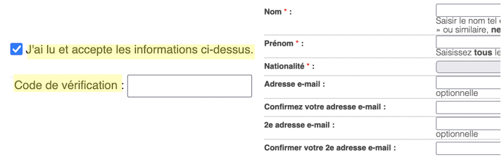On note l'absence de liaison entre les champs et les étiquettes visibles, surtout sur le formulaire par étape permettant de commander des produits, qui contient de nombreux champs.
Étiquettes et champs accolés
Le RGAA 4 exige que chaque étiquette et le champ qu'elle contrôle soient accolés. En effet, si l'étiquette et son champ sont trop éloignés, les utilisateurs malvoyants qui utilisent une loupe d'écran peuvent échouer à faire correspondre l'étiquette et son champ, et donc ne pas saisir les données attendues dans les bons champs.
Constats sur le site
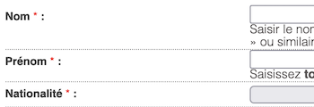Sur le formulaire de commande, les étiquettes visibles ne sont pas directement accolées aux champs qu'elles identifient. Les utilisateurs de zoom d'écran peuvent avoir des difficultés à faire la liaison entre les étiquettes et les champs.
Contrôle de saisie et aide à la saisie
Tous les champs obligatoires doivent être identifiés préalablement à toute validation de l’utilisateur.
Pour les champs qui attendent un format de saisie particulier pour être validés, ce format doit être spécifié à l’utilisateur par un passage de texte visible à proximité du champ. De plus, si l’utilisateur commet une erreur sur ce champ, alors le message d’erreur doit présenter un exemple réel de saisie.
Enfin, les messages d'erreur de saisie des champs de formulaire doivent être liés correctement aux champs en erreur.
Constats sur le site
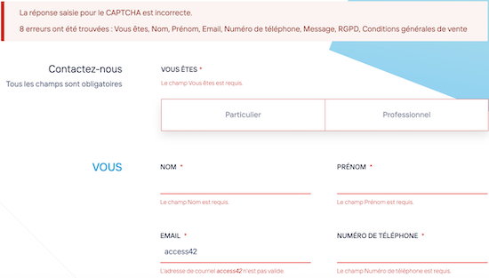Les formulaires de contact et de commande ne proposent pas de contrôle de saisie cohérent. Par exemple, sur le formulaire de contact, les champs "Email" et "Numéro de téléphone" attendent un format particulier qui n'est pas indiqué et les messages d'erreurs ne contiennent pas d'exemples de saisie.
De manière générale, il est également nécessaire d'ajouter un message indiquant les champs obligatoires avant le formulaire et de relier les descriptions aux champs avec la propriété aria-describedby.
Regroupements de champs et légendes
Les regroupements de champs sont utiles pour ne pas induire certains utilisateurs en erreur, notamment les personnes aveugles.
Les cas typiques de regroupements nécessaires sont les groupes de cases à cocher ou de boutons radio.
Il est nécessaire d'implémenter les champs dans un regroupement lorsque c'est nécessaire et il est obligatoire de définir une légende à ce regroupement.
Constats sur le site
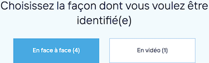Sur la page de commande, les champs "En face à face (4)" et "En vidéo (1)" doivent être regroupés en utilisant le passage de texte "Choisissez la façon dont vous voulez être identifié(e)" comme légende de regroupement.
Identification des données attendues
Certains utilisateurs qui ont des troubles d'accès au langage verbal (paralysie cérébrale, aphasie par exemple) auront des difficultés à accéder au sens des termes écrits. Ainsi, pour leur permettre de remplacer les étiquettes présentes dans les formulaires par des étiquettes (verbales ou imagées) qu'ils connaissent, il est nécessaire d'identifier les champs avec un attribut particulier, de sorte qu'une technologie d'assistance pourra réaliser la personnalisation du formulaire nécessaire à l'utilisateur.
L'identification de ces champs permet également aux utilisateurs d'employer des outils pour remplir automatiquement les champs identifiés avec des valeurs de l'utilisateur.
On ne va rechercher que les champs qui attendent une donnée personnelle. Le RGAA demande d'utiliser l'attribut autocomplete et il fournit l'ensemble des valeurs possibles pour l'attribut.
Constats sur le site
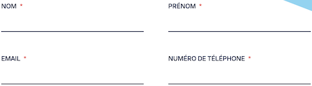Les éléments de formulaire attendant la saisie de données personnelles n'implémentent pas l'attribut autocomplete, par exemple sur la page "Contactez-nous" ou sur le formulaire par étape de commande.
Navigation
Recommandation :
Faciliter la navigation dans un ensemble de pages par au moins deux systèmes de navigation différents (menu de navigation, plan du site ou moteur de recherche), un fil d'Ariane et l'indication de la page active dans le menu de navigation. Identifier les groupes de liens importants et la zone de contenu et donner la possibilité de les éviter par des liens de navigation interne. S'assurer que l'ordre de tabulation est cohérent et que la page ne comporte pas de piège au clavier. S'assurer que les raccourcis clavier qui utilisent une seule touche sont contrôlables par l'utilisateur.
Landmarks ARIA
Pour fournir des points de repère aux utilisateurs aveugles, il faudra également implémenter les landmarks ARIA sur les balises HTML 5 de la page.
Constats sur le site
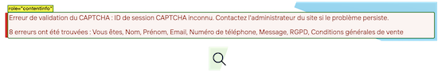De manière générale sur tout le site, dans l'en-tête, l'élément permettant d'ouvrir la fenêtre modale de recherche n'implémente pas la propriété role="search", permettant d'accéder plus rapidement au moteur de recherche.
Le message d'erreur du formulaire implémente la propriété role="contentinfo" qui est réservée pour structurer le pied de page et doit être unique dans la page.
Ordre de tabulation
La navigation dans les contenus peut être considérablement compliquée pour les personnes aveugles ou les personnes handicapées motrices qui naviguent au clavier si l'ordre de tabulation n'est pas cohérent.
L'ordre de tabulation est déterminé par l'ordre des éléments dans le code HTML. Il ne suit pas forcément l'ordre de lecture de la page ou de l'écran, mais il doit être cohérent en fonction de la nature des contenus et des fonctionnalités.
Constats sur le site
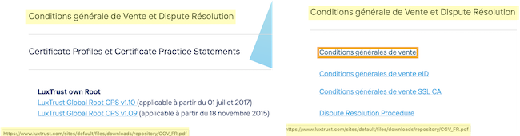Les éléments qui sont non affichés à l'écran ne doivent pas être accessibles à la navigation au clavier. Par exemple sur la page "Aide et support", il est possible d'afficher/masquer des zones, mais lorsque ces zones sont masquées, les contenus à l'intérieur de celles-ci (liens par exemple) ne doivent pas être accessibles au clavier.
Consultation
Recommandation
Vérifier que l'utilisateur a le contrôle des procédés de rafraîchissement, des changements brusques de luminosité, des ouvertures de nouvelles fenêtres et des contenus en mouvement ou clignotants. Ne pas faire dépendre l'accomplissement d'une tâche d'une limite de temps sauf si elle est essentielle et s'assurer que les données saisies sont récupérées après une interruption de session authentifiée. Proposer des versions accessibles ou rendre accessibles les documents en téléchargement. S'assurer que la consultation n'est pas dépendante de l'orientation de l'écran. Toujours proposer un geste simple en alternative d'un geste complexe permettant de réaliser une action.
Documents en téléchargement
Assurez-vous que chaque document soit accessible (cf. les Guides de créations de documents bureautiques accessibles), ou qu'il dispose d'une alternative accessible proposant le même contenu (par exemple, une version HTML correctement structurée).
Constats sur le site
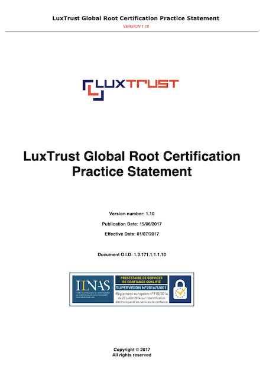Sur la page "Repository", on trouve des documents PDF non accessibles (non balisés, sans table des matières, etc.).
Contenus en mouvement ou clignotants
Les contenus en mouvement peuvent être problématiques pour les utilisateurs avec des difficultés de lecture. En effet un contenu qui défile trop rapidement empêche d'accéder de fait à l'information. De plus, le mouvement empêche les personnes avec un déficit de l'attention de lire le reste de la page..
Il faut alors permettre aux utilisateurs d'arrêter et de redémarrer le contenu en mouvement , ou d'afficher tout le contenu sans le mouvement ou de masquer le contenu en mouvement et de le réafficher.
Constats sur le site
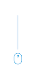Sur la page d'accueil, l'information que la page est défilable est donnée avec une animation de souris. Ce contenu en mouvement peut perturber la lecture du reste de la page.
Contrôle de temps de session
Les utilisateurs en situation de handicap peuvent avoir besoin de beaucoup de temps pour consulter un contenu ou réaliser une action. Les rafraîchissements automatiques, les redirections automatiques, les limites de temps de session sont donc autant de difficultés supplémentaires qui peuvent leur interdire la consultation ou l'utilisation d'un site.
Dans ces situations, l'utilisateur doit pouvoir contrôler la limite de temps par un des moyens suivants :
- Arrêter et relancer le rafraîchissement ou la redirection automatique ;
- Augmenter la limite de temps avant le prochain rafraîchissement ou la prochaine redirection de dix fois au moins par un paramètre de personnalisation ou suite à un message d'avertissement ;
- Supprimer la limite de temps de session ou l'augmenter selon ses besoins.
Note importante : lorsque la limite de temps est essentielle au contenu ou à la fonctionnalité qui seraient fondamentalement modifiés si elle était supprimée, aucune adaptation ne doit être réalisée.
Constats sur le site
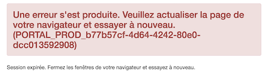Sur les écrans d'authentification, une limite de session apparait sans qu'il ne soit possible de la repousser.